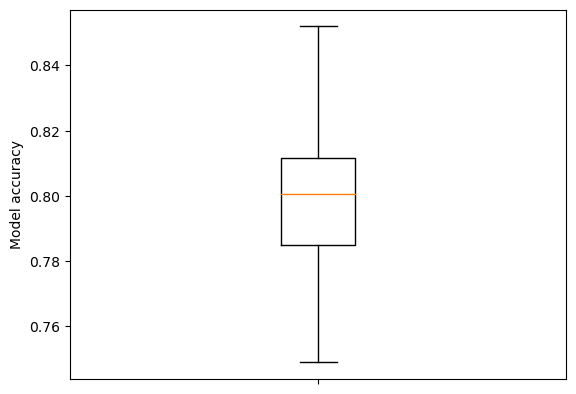
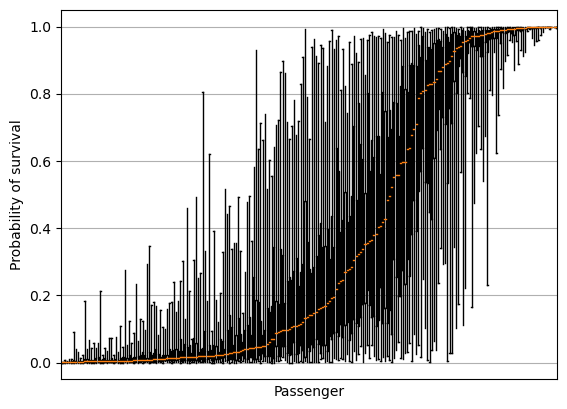
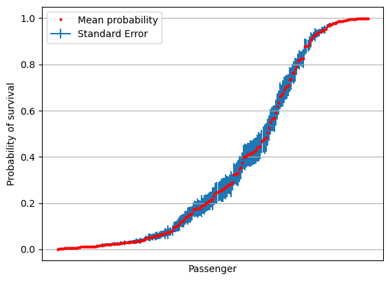

Measuring uncertainty in probability predictions using bagging
Contents
Measuring uncertainty in probability predictions using bagging#
With bagging(‘boostrap aggregation’) we train multiple models based on multiple bootstrap samples (sampling with replacement) of the training data.
Here we use bagging to examine variation in predicted probability of survival.
For an introduction to bootstrapping see: https://youtu.be/Xz0x-8-cgaQ
Import packages#
# Turn warnings off to keep notebook tidy
import warnings
warnings.filterwarnings("ignore")
import matplotlib.pyplot as plt
import numpy as np
import pandas as pd
# Import machine learning methods
from xgboost import XGBClassifier
Download data if required#
download_required = True
if download_required:
# Download processed data:
address = 'https://raw.githubusercontent.com/MichaelAllen1966/' + \
'1804_python_healthcare/master/titanic/data/processed_data.csv'
data = pd.read_csv(address)
# Create a data subfolder if one does not already exist
import os
data_directory ='./data/'
if not os.path.exists(data_directory):
os.makedirs(data_directory)
# Save data
data.to_csv(data_directory + 'processed_data.csv', index=False)
Load data and split into trainign and test sets#
data = pd.read_csv('data/processed_data.csv')
# Make all data 'float' type
data = data.astype(float)
# Shuffle data
data = data.sample(frac=1, random_state=42)
# Split into training and test sets
training_size = int(len(data) * 0.75)
train = data.iloc[0: training_size]
test = data.iloc[training_size:]
Create bootstrap sampled training sets#
splits = 30
train_set = []
for i in range(splits):
train_set.append(train.sample(frac=1, replace=True))
Train models#
# Set up lists for models and probability predictions
models = []
results = []
accuracies = []
for i in range(splits):
# Get X and y
X_train = train_set[i].drop('Survived', axis=1)
X_test = test.drop('Survived', axis=1)
y_train = train_set[i]['Survived']
y_test = test['Survived']
# Define and train model; use different random seed for each model
model = XGBClassifier(verbosity=0, seed=42+i)
model.fit(X_train, y_train)
models.append(model)
# Get predicted probabilities and class
y_probs = model.predict_proba(X_test)[:,1]
y_pred = y_probs > 0.5
results.append([y_probs])
# Show accuracy
accuracy = np.mean(y_pred == y_test)
accuracies.append(accuracy)
results = np.array(results)
results = results.T.reshape(-1, splits)
print (f'Mean accuracy: {np.mean(accuracies):0.3f}')
Mean accuracy: 0.799
Show boxplot of accuracy measurements.
fig = plt.figure()
ax = fig.add_subplot()
ax.boxplot(accuracies, whis=999)
ax.set_ylabel('Model accuracy')
ax.axes.xaxis.set_ticklabels([]) # Remove xtick labels
plt.show()

Measure accuracy of consensus decision#
Consensus decision is the majority vote of the models.
classification = results >= 0.5
consensus = classification.sum(axis=1) >= splits/2
consensus_accuracy = np.mean(consensus == y_test)
print (f'Consensus accuracy: {consensus_accuracy:0.3f}')
Consensus accuracy: 0.821
Plot variation in probability prediction#
# Sort by mean survival
results = results[np.median(results,axis=1).argsort()]
Box plot#
fig = plt.figure()
ax = fig.add_subplot()
ax.boxplot(results.T, whis=999)
ax.axes.xaxis.set_ticklabels([])
ax.set_xlabel('Passenger')
ax.set_ylabel('Probability of survival')
ax.set_xticks([])
ax.grid()
plt.show()

Plot of standard deviation#
# Sort by mean survival
results = results[np.mean(results,axis=1).argsort()]
results = results[np.mean(results,axis=1).argsort()]
mean = np.mean(results,axis=1)
stdev = np.std(results,axis=1)
fig = plt.figure()
ax = fig.add_subplot()
ax.errorbar(range(len(mean)), mean, yerr=stdev, label='Standard Deviation', zorder=1)
ax.plot(mean, 'o', c='r', markersize=2, label = 'Mean probability', zorder=2)
ax.axes.xaxis.set_ticklabels([])
ax.set_xlabel('Passenger')
ax.set_ylabel('Probability of survival')
ax.set_xticks([])
ax.grid()
ax.legend()
plt.show()
Plot of standard error#
# Sort by mean survival
results = results[np.mean(results,axis=1).argsort()]
results = results[np.mean(results,axis=1).argsort()]
mean = np.mean(results,axis=1)
stdev = np.std(results,axis=1)
se = stdev / np.sqrt(splits)
fig = plt.figure()
ax = fig.add_subplot()
ax.errorbar(range(len(mean)), mean, yerr=se, label='Standard Error', zorder=1)
ax.plot(mean, 'o', c='r', markersize=2, label = 'Mean probability', zorder=2)
ax.axes.xaxis.set_ticklabels([])
ax.set_xlabel('Passenger')
ax.set_ylabel('Probability of survival')
ax.set_xticks([])
ax.grid()
ax.legend()
plt.show()

Plot confidence limits#
import scipy.stats as st
# create 95% confidence interval
confidence = st.t.interval(alpha=0.95, df=len(results)-1, loc=mean, scale=se)
confidence_magnitude = confidence[1] - confidence[0]
fig = plt.figure()
ax = fig.add_subplot()
ax.errorbar(range(len(mean)), mean, yerr=(confidence_magnitude/2),
label='95% confidence limits' ,zorder=1)
ax.plot(mean, 'o', c='r', markersize=2, label = 'Mean probability', zorder=2)
ax.axes.xaxis.set_ticklabels([])
ax.set_xlabel('Passenger')
ax.set_ylabel('Probability of survival')
ax.set_xticks([])
ax.grid()
ax.legend()
plt.show()
fig = plt.figure()
ax = fig.add_subplot()
ax.scatter(mean, confidence_magnitude)
ax.set_xlabel('Probability of survival')
ax.set_ylabel('95% Confidence interval of probability of survival')
ax.grid()
plt.show()
Conclusions#
Bagging may be used to explore uncertainty of prediction
Uncerntainty is highest for cases with around 50% probability of survival